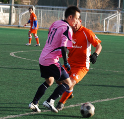

|
Hachioji Park, Saturday 6th February.
There aren't many games that serve up 3 hatricks and all from the same side, but that was the treat in store for the galleries massing around the pitch at Hachioji Park. The “galleries”, otherwise known as, Romen's mate from England, was press ganged into the photographer role and he had plenty of action to keep him busy – thirteen goals in a feast of attacking football.
Panthers had a chance to show the depth of their squad as Matt and Mori were missing and Rick was still recovering from injury. Things weren't helped when Sho called in to say he'd be delayed due to wind! Nothing to do with the curry take-away he'd had Friday night, but rather the strong gusts that closed the Musashino line. Still, he made it for half time and Panthers had the bare bones of their squad to kick off.
With Panthers wearing pink, the Dutch in their dazzling orange and the ref, Orlando resplendent in his bright yellow, it was like a scene from a hideous “pick and mix” nightmare.
Dan thought about taking the opportunity to wear his Nike trainers, but was wisely restrained on the grounds that this might constitute a public nuisance! Fortunately, the skills on show were a little more pleasing to the eye and both sides were looking to get forward in an open and competitive match. The Dutch had speed and mobility up front and struck first with a blistering shot from their right-sided midfielder. Sid got finger tips to it but couldn't prevent it finding the roof of the net. 1-0 Dutch and a wake up call.
This was going to be a test of resolve for the Panthers but they responded with great character. Romen began to win the 50/50 challenges in midfield and Panthers started to take some control of the game. Mark, playing just behind the front two, became the pivot for our attacking forays, linking play to the wide men and looking to line up shots at every opportunity. It was only a matter of time before the pressure told and Mark capped a great first half performance by burying a shot from the edge of the area into the bottom corner. 1-1. Within a few minutes the game had been turned on its head as Ben latched onto a fumbled cross/shot and made hard work of tapping it in from 2 yards (almost embarrassing miss of the century!) 2-1 Panthers. The Panthers were beginning to fire on all cylinders and took a real hold of the game when a long punt from Sid was flicked on by Tom and Ma finished in style. 3-1 Panthers at half time.

Three goals in the first 10 minutes of the second half and the game was effectively settled. The Dutch must have wondered what was going on because they weren't playing badly but just got hit by some clinical finishing. Dan burst down the right side and pulled the ball back for Ben to sweep in his second, Tom dribbled into the box before finishing superbly and Ma added a third. Just to rub salt into it, Tom turned a defender on the left side of the box and was brought down for a penalty. No arguments and Ben dispatched the penalty for his hatrick. 7-1 Panthers and game over.
That wasn't the end of the goal-fest though and both sides continued to play an open game of “total football” (otherwise known as dodgy defending). The Dutch weren't finished and capped a sweeping move with a neat finish before Panthers responded with three more of their own, the pick of which was a nonchalant right foot curler from Ma for his hatrick. Two more textbook finishes from Tom gave him his own hatrick to put the gloss on a fantastic performance, leading the line.
 The Dutch had the final say when a great cross behind the defence was finished with a diving header to make the final score 10-3 Panthers. The Dutch had the final say when a great cross behind the defence was finished with a diving header to make the final score 10-3 Panthers.
The three hatrick heroes take the plaudits but this was a real team performance and special mention to Lars who lead the back line with cool assurance and Mark who played his best game yet for Panthers.
Report by Andy Vaughan
|